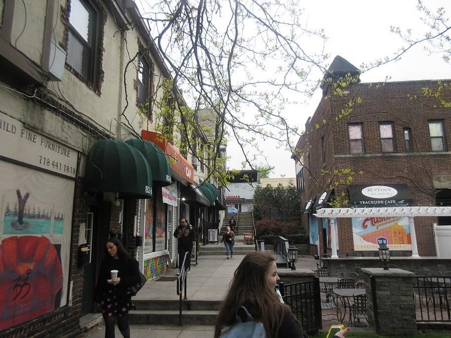

社会心理学
効果は実験で繰り返し確かめられている。だがその名前の由来になった「38 人の目撃者」の事件は、新聞が作った誤報だった。事実と神話が同じ名前で流通した半世紀を、最初からほどいていく。
ラタネとダーリーが「責任拡散」を実験で示し、後に「傍観者効果」と呼ばれることになる現象が学術用語として誕生した年。
同年の世界:マーティン・ルーサー・キング牧師暗殺、パリ五月革命、プラハの春とソ連軍侵攻、アポロ 8 号月軌道。社会の連帯と無関心が同時に問われた年だった。
1964 年の事件から 60 年。効果は何百回も追試され、メタ分析も積み上がった。しかし 「38 人が見殺しにした」という事件そのものの物語は、新聞が作った誤報のまま、半世紀近く検証されずに漂い続けた。
駅のホームで、誰かがうずくまっている。酔っているのか、倒れたのか。周りには通勤客が何十人もいる。みんな視線を少しずつ落としている。私もスマホを見る。誰かが気づくだろう。きっと駅員が来る。
この場面は、誰にでも覚えがあるはずだ。「誰かが」という言葉には不思議な磁力があって、その「誰か」に自分が含まれていないことを、私たちは自動的に前提にしてしまう。
だが、その「誰か」は、最初から存在しない。
一つの事件を出発点にして生まれた効果が、出発点の方を誤報として残した。実在と神話を同時に引き受けながら、「誰かが動くはず」の自分をほどいていく。
1964 年 3 月 13 日、午前 3 時過ぎのニューヨーク市クイーンズ。キティ・ジェノヴィーズ(Kitty Genovese、女性、当時 28 歳、地元のバーでマネージャー)は、仕事から帰宅したところを、自宅アパート「モーブレー(Mowbray)」の前(路上駐車場側)でウィンストン・モーズリーという男にナイフで刺された。叫び声を聞いた住人が窓から怒鳴り、男は一度逃走する。負傷したキティは自力で建物の裏手に回り、裏口の廊下(建物共用のロビー状の空間)に倒れ込んだ。約 10 分後、男は戻ってきて裏口の廊下でキティを発見し、そこで再度襲った。彼女は致命傷を負い、搬送途中で死亡した。つまり最初の襲撃は建物の表、二度目の襲撃は建物裏の廊下——この位置の違いが、後の「誰が何を見たか」の話に効いてくる。犯人モーズリーは 29 歳、工員、前科なし、既婚で子どもが 3 人いた。
事件の 2 週間後、『ニューヨーク・タイムズ』第一面にマーティン・ガンズバーグ記者の署名記事が載る。見出しは "37 Who Saw Murder Didn't Call the Police"(37 人の目撃者が殺人を見ながら警察に電話しなかった)。ただし本文では目撃者の数は 38 人と書かれていて、見出しと本文で一人ずれている——これは NYT 側の単純な誤植で、以後の引用では 38 人の方が広まった。記事はこう書いた。「30 分にわたる襲撃の間、クイーンズの尊敬できる、法を守る市民 38 人が、殺人犯が女性を三度追って刺すのを見ていた」。誰一人として警察に電話しなかった、と。
この記事は、社会心理学の教科書に引用され、「現代都市人の冷淡さ」を象徴する寓話になった。ラジオも映画もドラマも、事件の名前で無関心を名指しするようになる。誰も助けなかった、という物語は、あまりにも使いやすかった。
本稿で以後「神話」と呼ぶのは、この記事が流布させた「38 人が現場を目撃しながら、誰一人として動かずに女性を見殺しにした」という物語そのものを指す。実験で繰り返し確かめられている傍観者効果の学術概念(=効果)とは、以後ずっと分けて扱う。
ただ、この記事には一つ問題があった。書かれたことの大半が、事実と一致していなかった。
では、なぜこの誤報が残ったのか。都市部長エイブ・ローゼンタールは、事件から数日後、警察署長との昼食でこう聞かされた。「クイーンズの例の件、あれは語り草ものだ。目撃者が 38 人もいたんだぞ」。ローゼンタールはこの数字をそのまま記事のテーマに据えた。検証された数字ではなかった。
のちに同僚記者がガンズバーグに問いただしている。「目撃者が殺人だと認識していなかったことを、なぜ書かなかった?」。答えは残っている。
"It would have ruined the story."
物語が台無しになっただろうからね。
— Martin Gansberg(NYT 記者、事件報道の執筆者)、同僚記者 Danny Meehan との私的な会話での発言。ドキュメンタリー『The Witness』(2015)で開示された
38 という数字の根拠は、最後まで出てこなかった。物語を守るために事実の側が削られたのだ。

事件には、NYT の記事から完全に抜け落ちた人物がいる。名前はソフィア・ファラー(Sophia Farrar)、36 歳、同じ Mowbray に住む親しい女性の友人(家族ではない、キティの友人)。二度目の襲撃の最中、別の住人グレタ・シュワルツが「下で誰か刺されている」と電話で伝え、それを受けたソフィアは夜中の建物裏口の廊下に走り込んだ。そこで血の滴るキティを抱きかかえ、救急車が到着するまで「助けは来るわ」と囁き続けた。最期の時間を一緒にいたのは、この一人だった。
ニューヨーク市クイーンズ、キュー・ガーデンズのバーでマネージャーをしていた。1964 年 3 月 13 日、帰宅直後に自宅前で襲われ死亡。「傍観者効果」という学術用語は、彼女の死をめぐる誤った報道から生まれた。
キティの隣人で友人。襲撃後、血の滴る廊下に駆け込み、救急車が来るまで彼女を抱きかかえて「助けは来るわ」と囁き続けた。NYT の記事には一度も登場しなかった。2016 年、NYT は公式に誤報を認め、そこで初めて彼女の名前が記事化された。92 歳で亡くなるまで、「無関心な隣人たち」の物語に反論し続けた。
事件の 4 年後、二人の若い社会心理学者、ジョン・ダーリーとビブ・ラタネJohn Darley & Bibb Latanéコロンビア大学とニューヨーク大学の若手研究者。事件の報道に強い違和感を持ち、「本当に人間は冷淡なのか、それとも状況の方に問題があるのか」を実験で切り分けようとした。二人は以後、傍観者効果の研究で生涯を知られることになる。は、事件をきっかけに実験を始めた。彼らの問いは、教科書の寓話とは少しずれていた。「一人ひとりが冷淡なのではなく、複数の人がいること自体が行動を止めているのではないか」。
二人の論文で、現象は初めて名前を得た。責任拡散Diffusion of responsibility周りに他の人がいるほど、「自分が動かなくてもいい」という感覚が強まる心理。人数で割られるのは責任感で、能力や情報ではない。。そして、この概念の名前が、元の事件の物語と混ざって広まっていった。
神話は神話として、効果は効果として、別々に向き合う必要がある。まず 効果の方から、手を動かして触ってみる。
目の前で緊急事態が起きている。あなた以外に n 人の傍観者がいるとき、あなたが動く確率・責任の割られ方・場面の見え方が、どう連動して変わるか。スライダーを動かすと 3 つが同時に更新される。
ダーリー & ラタネ(1968)「てんかん発作」実験の実測値(単独 85% / +1 人 62% / +4 人 31%)を元に、指数減衰モデル p = 85·e−0.25n で内挿。大きな % は動く確率、パイは「責任が 1/N に割れる」という責任拡散の概念図で、実測値ではなく心理メカニズムの視覚化。フィッシャーら(2011)のメタ分析(n=7,700、105 効果)でも、傍観者の増加が介入確率を下げる傾向は再現されている。なお現実の公共空間では別の力学が働く点については、記事後半で触れる。
単独なら 85% が動く。他に 4 人いるだけで 31% に落ちる。9 人に増えると 10% を切る。人数で割られているのは、責任感だ。行動力でも、情報量でもない。ここまでは、事実として残っている効果の話になる。
次は、事件の夜を「内側」から体験してみる。あなたは 1964 年 3 月、キュー・ガーデンズのモーブレーアパートの住人だ。年齢も職業も、あなた自身のもので構わない。ただし、スマートフォンはない。窓から見えるのは中庭の一部だけ。あなたの部屋から 911 番までは、黒電話一本でつながっている。
その夜、何かが聞こえる。何をする? この体験で重要なのは「正解を選ぶこと」ではなく、「なぜそう選んでしまうのか」を内側から見ることだ。
あなたの最初の行動は:
次の一手は:
あなたの選択と、実際の住人の分布
あなたは A → A を選んだ。
実在した約 12 人の目撃者のうち、再調査で明らかになった行動の分布はこうなる:
「全員が無関心」ではなかった。だが「全員が即時に動いた」でもなかった。現実は、選択肢が重なりあった分布として残っている。
同じ夜の、2 つの書き方
もう一つ。あなたが見たのも、一つの窓の外だけだ。事件の全体を見通せる位置にいた人は、実在の目撃者の中にも一人もいなかった。「全部を見て、それでも動かなかった 38 人」というのは、新聞の作った俯瞰の視点に過ぎない。
効果は実在する。だが「誰もが冷淡で、わかっていて、見捨てた」という物語は、そこに嘘の俯瞰視点をつけ足したものだった。
ラタネとダーリーが実験で切り分けたメカニズムは、一つではない。彼らは「傍観者効果」を、4 つの心理が折り重なった結果として整理した。どれもが、日常の自分でも心当たりがある種類のものだ。
「これは緊急事態か?」を判断する時、人は周囲の他者の反応を参照する。誰かが慌てていれば「やはり大変なのだ」と確信し、誰も動いていなければ「大したことではないのかもしれない」と解釈を引き下げる。
問題は、周囲の人も同じことをあなたに対してやっていることだ。全員が全員の冷静さを「大丈夫のサイン」として読み合い、誰も動かない。ラタネとダーリーの煙の部屋実験(1968)では、単独なら 75% が煙を報告したが、無反応な 2 人と同室だと 10% に落ちた。煙そのものは同じ量だった。
一人しかいなければ、動くか動かないかはすべて自分の責任になる。4 人いれば、責任は 4 分の 1 に感じられる。責任は算数ではないのに、なぜか人数で割られる。
ダーリーとラタネ(1968)のてんかん発作実験では、単独なら 85% が助けを呼んだが、5 人のグループ条件では 31% に落ちた。助けなかった人たちが冷淡だったわけではない。実験後の聞き取りでは、多くが緊張と混乱の表情を見せていた。彼らは決めかねていたのだ。「自分が動いていいのか」を。
「もし私が飛び出して、ただの酔っ払いの喧嘩だったら」「通報したのに、何もなかったら恥ずかしい」。他人に見られているという感覚そのものが、行動を止める。
ここで厄介なのは、動かない選択は、何もしなかったという形で他人に観察されるのに、それは恥の対象にならないことだ。動いて間違える方が、動かずに間違える方よりも、社会的に目立つ。人はその差に敏感で、敏感すぎる。
介入には時間もお金も危険も含まれる。加害者と対峙することになるかもしれない。警察の事情聴取で 3 時間潰れるかもしれない。コストが身体的なほど、人は動きが鈍るのが標準的な結果として報告されている(ピリアビンら 1981)。
ただし、2011 年のフィッシャーらのメタ分析は、本当に危険な場面や、加害者がその場にいる場面では、傍観者効果が弱まることを示した。曖昧さが消えると、4 つの心理のうちの前半(解釈・責任)が機能しなくなるからだ。危険が明確なとき、人は意外と動く。
4 つの心理のうち、どれが効いているかはケースで違う。ただ、どれも「自分の性格」の問題ではなく状況の問題として記述されている点は共通している。あなたが昨日、駅のホームで目を逸らしたのは、あなたが冷たい人間だからではなく、4 つの歯車のどれかが回ったからだ。
ここまでは「なぜ動かないか」の話だった。裏返して「動いた側」に目を向けると、別の風景が見える。フィルポットら(2019)の CCTV 解析では、ほぼすべての暴力事件に最初に動く 1 人が含まれていた。その 1 人を決める条件は、性別や年齢ではなく、被害者との空間的な近さ、手にしている情報の量、そして「自分なら何かできる」という過去の経験だった。傍観者効果が本当に強く作動するのは「誰も動かない」場面ではなく、「最初の 1 人が出ない」場面の方だ。最初の 1 人が現れさえすれば、周りは続く。ソフィア・ファラーが血の廊下に走り込んだ、あの最初の 1 人のことだ。
以下の年表で、● は事件と神話をめぐる主要な転換点、○ は関連する動きを示す。神話が作られた年と、それが訂正された年の間には、半世紀近くの距離がある。
1964 年 3 月 13 日
キティ・ジェノヴィーズ殺害
ニューヨーク市クイーンズのキュー・ガーデンズで、キティが帰宅途中に襲撃され死亡。逮捕された犯人ウィンストン・モーズリーは、動機として「女性を殺したかった」と供述した。
1964 年 3 月 27 日
NYT「38 人」記事
マーティン・ガンズバーグの署名記事が第一面に。検証されないまま、都市編集者が昼食で聞いた数字がそのまま記事のテーマに据えられた。以後、事件は「現代人の無関心」の象徴になる。
1968 年
ラタネ & ダーリー、責任拡散を実験で示す
てんかん発作実験と煙の部屋実験の 2 本で、傍観者の人数が介入確率を下げることを定量化。事件を出発点にしたが、彼らの関心は「冷淡さ」ではなく「状況の力」にあった。
1970 年
『The Unresponsive Bystander』出版
ラタネとダーリーが一連の実験を一般書にまとめて刊行。ここで "bystander effect" という呼称が学術の外にも広まり、教科書・メディアを通じてキティ事件の物語と癒着していく。
2004 年
NYT 自身による再検証記事
事件 40 周年に、NYT のジム・ラゼンバーガー記者が元記事の問題点を列挙。38 という数字の根拠が存在しないことが、公の場で指摘された。
2007 年
マニング・レヴィン・コリンズ論文
『American Psychologist』誌で、マニングら 3 人が一次資料から事件を再構築。「38 人の目撃者が非行動を観察した、という物語の証拠は存在しない」と結論。教科書の寓話が公式に否定された。
2011 年
フィッシャーらのメタ分析
7,700 人超・105 の効果量を統合。傍観者効果自体は実在するが、状況が本当に危険だと認識されるほど、また加害者がその場にいるほど、効果は弱まる。「冷淡さ」ではなく「曖昧さ」が主因であることが確認された。
2015 年
ドキュメンタリー『The Witness』公開
キティの弟ビル・ジェノヴィーズが、姉の最期の夜を再調査するドキュメンタリー。ソフィア・ファラーが初めて一般的な場に登場し、ガンズバーグ記者の「物語が台無しに」発言も公開された。
2016 年
NYT 自身が公式訂正
元記事の死亡記事的な訂正文を掲載。「目撃者の数と、彼らが知覚した内容について、元記事は著しく誇張していた」と記載。ソフィア・ファラーの名前が NYT で初めて肯定的に紙面に載った。
2019 年
フィルポットら、CCTV の実データを公開
英・蘭・南アの 219 件の公共空間の暴力事件を CCTV で解析。9 割で少なくとも 1 人が介入しており、むしろ傍観者が多いほど誰かが動く確率が上がっていた。実験室の効果と、現実の公共空間では、同じ話が違う形をする。
まとめる。傍観者効果は実在する。何百もの実験で、人数が介入を鈍らせることが再現されてきた。同時に、その名前の由来になった 38 人の物語は、新聞が作った誤報だった。効果と神話は、半世紀のあいだ一つの塊として流通した後、別々に見えるところまで来た。
"The story, despite the absence of evidence, continues to inhabit our introductory social psychology textbooks."
その物語は、証拠がないにもかかわらず、社会心理学の入門書の中に住み続けている。
— Rachel Manning, Mark Levine & Alan Collins『American Psychologist』誌「38 人の目撃者という寓話」(2007)
さらにもう一つ。2019 年のフィルポットらの CCTV 研究は、現実の公共空間では傍観者が多いほど介入が起こりやすいことを示した。これは前半の実験結果と正反対に見えるが、理由はシンプルだ。総数が増えるほど「動く気になる人」が一人は含まれる確率が上がり、その一人が動くと周囲も続く。公共の暴力は、実験室のように状況が曖昧ではないことが多い——殴られている人がいる、誰かが叫んでいる、といった手がかりがはっきりしている。曖昧さの 4 つの心理(解釈・責任・評価・コスト)のうち前半が作動しないので、人数は逆に「動ける人」の頭数として働く。ストリートの現実は、実験室のレシピをそのまま投影できる場所ではない。
ここで一度立ち止まる。では、半世紀漂った神話は完全に無意味だったのか。そうとも言い切れない。誤報は誤報として、「見過ごすな」という警告として心肺蘇生講習、市民救助教育、公共キャンペーンに組み込まれ、少なからず介入を促進してきた。事実として間違っていた物語が、別の場面では人を動かした——神話は悪、事実は善、という単純な図式で整理できるほど、物語の力は小さくない。だからこそ、訂正に 55 年かかったとも言える。訂正が済んだあとに残るのは、神話を捨てることではなく、「神話がどう効いていたか」を引き取ったうえで次を設計する責任の方だ。
ではどうするか。知っているだけでは、効果は消えない。「傍観者効果を知っている人」も、次の朝、駅のホームで同じように視線を落とす。「知っている」と「動ける」の間には、もう一段の仕掛けが要る。
なお、この心理は緊急事態だけの話ではない。大人数の会議で誰も決めない、集団プロジェクトでタスクが宙に浮く、チーム医療で誰がリーダーか曖昧になる、オンラインでハラスメントを全員が見ているのに誰も止めない——どれも同じ歯車が回っている。責任は人数で割られる、という性質は、どの場面でも変わらない。医療安全のマニュアルに「毎回、チームリーダーを声に出して指名する」という項目が入っているのは、この回転を止めるための設計だ。
実験室で、また現場で、ある程度効果が確かめられている対処は 3 つある。一つ目は、個人を名指しで呼ぶPoint-and-call「誰か助けて」ではなく「赤いシャツの男性、救急車をお願いします」と特定の個人に指示する。責任が割り切れなくなる。医療現場やライフセービングの現場で標準化されている。こと。倒れているのを見つけた側が「誰か」ではなく「赤いシャツの男性」と呼ぶだけで、責任が割り切れなくなる。
二つ目は、最初の一人役をあらかじめ決めておくPre-commitment緊急時にどう動くかを、事が起きる前に自分に対して約束しておく。ピストルの音を 1 回聞いたら上から逃げる、倒れている人を見つけたら声をかける、のように条件と行動を事前にひもづけておくと、実際の瞬間に考える負荷が下がる。こと。事前に自分とした約束は、現場で考える負荷を減らす。「もし電車の中で人が倒れたら、私は声をかける」—— これを平常時に口に出しておくだけで、確率は上がる。
三つ目は、自分が見ているのは常に断片であると先に知っておくこと。あなたの窓から見えるのは中庭の一部だけだ。全部を俯瞰できる視点は、新聞社の編集机にしか存在しない。断片しか持っていないのだから、「わからない」ことを即決で動かない理由にしない、という構えを用意しておく。
ただし、どれも万能ではない。加害者と対峙する状況では、身を守ることの方が優先される場面もある。「動く」と「動かない」の間には、通報する、記録する、遠くから声をかけるなど、多くの中間の選択肢がある。3 つの仕掛けは「必ず動け」という指示ではなく、「4 つの心理のどれかを、ほんの少し外す」ための道具だ。
作品への登場
ドキュメンタリー『The Witness』(2015、James Solomon 監督)
キティの弟ビル・ジェノヴィーズが、姉の死の夜を再検証する。証拠の収集、生存していた目撃者たちへの訪問、ソフィア・ファラーとの対面。「物語」の側が半世紀かけて作った輪郭を、ひとつずつ確かめ直していく。神話を壊す作業と、姉への個人的な弔いが同じ軌道を描く。
『Girls』シーズン 5 第 7 話「Hello Kitty」(2016、リナ・ダナム制作)
主要キャラクターたちがインタラクティブ演劇版のキティ・ジェノヴィーズ事件に参加する。観客として「見ている」ことと、「見捨てる」ことの違いが、舞台の仕掛けで揺さぶられる回。
『Law & Order: SVU』「41 Witnesses」(2016)
傍観者効果をモチーフにした映画脚本『Bystander』を元にしたエピソード。41 という数字は、38 の物語に対する挑発的な返答として置かれている。
Bystander intervention in emergencies: Diffusion of responsibility
「てんかん発作」実験を報告した原論文。単独 85% と 5 人条件 31% という数字は、ここから来ている。事件を出発点にしつつ、冷淡さを人数の問題に置き換えようとした元の動機が、短い文体で残っている。有料だが、大学図書館経由でアクセスできることが多い。
The Kitty Genovese murder and the social psychology of helping: The parable of the 38 witnesses
一次資料を丹念に読み直して、事件の「38 人」が神話であることを学術の場で確定させた論文。事実の側に立って教科書の記述を覆していく文体が、読んでいて気持ちよく、怖い。傍観者効果について一本だけ先に読むなら、これがいい。
7,700 人超を統合した決定版のメタ分析。効果は再現される一方で、状況が「本当に危険」だと読めたときには効果が弱まることを示した。「傍観者効果 = 冷淡さ」という単純な等式を、もう一段複雑にしてくれる。
英・蘭・南アの 219 件の実際の暴力映像を解析した論文。9 割で誰かが介入していて、むしろ傍観者が多いほど介入確率が上がっていた。実験室の効果を、そのまま現実に投影するのは危ないことを教えてくれる一本。不穏な結果というよりは、希望の寄った結果が淡々と記録されている。